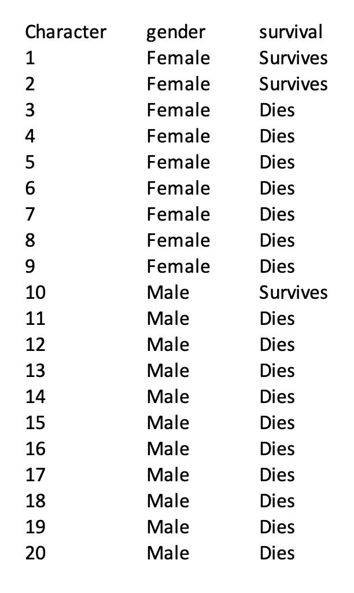

Lesson 13: The Horror Movie Shuffle
Lesson 13: The Horror Movie Shuffle
Objective
You will understand that, just by chance, you can see differences between two groups, and that these differences are usually small. You will learn that by calculating differences in the percentages between two groups, you can determine if outcomes are due to chance for categorical variables.
Vocabulary
chance, simulations, randomness, shuffle
Essential Concepts
Lesson 13 Essential Concepts
You can "shuffle" data based on categorical variables and by using the difference in percents. The distribution formed by shuffling represents what happens if chance were the only factor at play. If the actual observed difference in percents is near the center of this shuffling distribution, then you could conclude that chance is a good explanation for the difference; but if it is extreme (in the tails or off the charts), then you should conclude that chance is NOT to blame. Sometimes the apparent difference between groups is caused by chance.
Lesson
-
Stress/Chill Campaign Data Collection Monitoring:
Your teacher will be monitoring your class's data collection using the Campaign Monitoring Tool. Keep in mind that this tool will inform your teacher about whether or not you are collecting data.
-
Through the Campaign Monitoring Tool, your teacher can track the following:
-
Who has collected the most data so far.
-
How many active and inactive users there are.
-
How many responses were submitted on any given day.
-
How many responses have been shared, and how many remain private.
-
-
Quickwrite: In your IDS Journal, write down how you can be more accurate in your data collecting for the Stress/Chill campaign.
-
Recall what you have learned about chance (see Lesson 8).
Synonyms: possibility, prospect, expectation, unintentional, unplanned. The actual definition of chance is “a possibility of something happening.”
-
Think back to the path you saw in Lesson 9 item #2 (chance → probability → simulations). You can use simulations to show that sometimes when you think two groups are different, the difference is really just because of chance, or randomness, and does not mean anything.
-
Remember that a simulation is a model for creating random outcomes. Randomness means that something just happens without a specific order.
-
Below are some examples for comparing two different groups:
-
Men earn more money than women for some work.
-
Basketball players are faster runners than baseball players.
-
UCLA football players are better athletes than USC football players.
-
You and a friend flipped a coin 10 times, and you got more "heads."
In your IDS Journal, list other situations where two groups could be compared.
-
-
Sometimes differences between two groups are real, but sometimes they might just be due to chance. In your IDS Journal, state whether you think the differences are either real or due to chance for each of the situations in #7, and for the situations you came up with where two groups can be compared.
-
In this lesson, you will learn ways to tell the difference. Consider the following statement which offers a sample comparison: Men earn more money than women for some work.
Write down whether you think this statement is real, or if it is due to chance.
One possible response: I think this is real, especially in jobs where there is physical labor involved. I would guess that male construction workers make more than female construction workers because their boss might feel that male construction workers exert themselves more physically.
-
In your IDS Journal, write down your thoughts about the following question:
Do you think men and women have an equal likelihood of surviving by the end of a horror movie?
-
Today you will be pretending to be the producer of a horror movie. As a producer, you obtained data from 50 horror movies (sometimes called "slasher" films). There are a total of 485 characters in these 50 films. Two variables were recorded for each character: Gender and Survival. The values for Gender were “Male” and “Female.” The values for Survival were “Dies” and “Survives.”
Gender Survival Female Male Dies 172 228 Survives 50 35 Total 222 263 -
From this data, a few summary statistics were calculated. The percent of total survivors was calculated by dividing the total number of survivors by the total number of characters using the following code:
>tally(~survival,data=slasher,format="percent")
Only 18% of all characters survived in these slasher films! The percent of survivors was calculated for each gender. In other words, for all female characters, the number of female survivors was divided by the total number of females. Similarly, for all male characters, the number of male survivors was divided by the total number of males.
-
By the end of a horror movie about 23% of females survived, and about 13% of males survived.
-
Is this what you expected?
If you thought males would survive more often, then these results would be unexpected. If you thought females would survive more often, then these results would be expected. If you thought there was an equal likelihood of survival, these results would also be surprising.
-
What is the difference in the proportions of survival rates between genders? What does this mean in the context of surviving a horror movie?
The difference is 23% - 13% = 10%. This means that 10% more women characters survived than men.
-
Is this difference “big” or “small”? Can you define what is a “big” difference and what is “small difference?”
Upon first glance, it may seem like 10% is a big difference, but we do not know for sure.
-
-
You will now participate in an activity to determine if the 10% difference seen in the actual data set is big or small. This will help you determine if there really is a difference in horror movie survival rates for males versus females, or if the 10% difference was just due to chance.
Revise activity in steps 15-24.
-
You are going to be one of 20 characters in the slasher film Inescapable Dark Studios. This small cast will model the larger slasher data set; 46% of the characters will be cast as females and the remaining 54% will portray males.
Breakdown
46% of 20 (0.46 x 20) which is appoximately 9 characters will portray females
Of those 9 female characters 23%, or 2 will survive (0.23 x 9 ≈ 2)
The remaining 11 characters (20 – 9 = 11) represent male characters.
Of those 11 male characters, 13%, or 1 (0.13 x11 ≈ 1), are survivors.
-
Each group of characters (males and females) decide which characters will be survivors. They will use 3” x 5” cards to write either “dies” or “survives.”
For example (continued from above):
2 of the females are survivors; so 2 females from the group should write “survives” on their 3” x 5” card. The rest of the group should write “dies” on their card.
1 of the males survived; so 1 male from the group should write “survives” on their 3” x 5” card. The rest of the group should write “dies” on their card. 
-
IF there really is no difference between genders in horror films, then the characters who survived would only have done so by chance. In other words, males and females would have an equal likelihood of surviving. In your IDS Journal, write your answers to the following questions:
-
How many total people in the Inescapable Dark Studios cast are survivors? What is the total proportion of survivors?
Using the example above, there would be a total of 3 survivors from the cast of 20 students. The proportion of survivors would be 3/20 = 0.15 = 15%.
-
b. How many of the survivors would you expect to be male? How many would you expect to be female?
Using the example above, you could expect to see 15% of males and 15% of females survive, since that was the overall proportion of survivors. So we would expect 0.15x11 = 2 male survivors, and 0.15x9 = 1 female survivor.
-
-
The film director will collect all of the 3” x 5” cards from the characters and they will shuffle the cards and redistribute them to the characters so that their genders have no influence on whether or not they survive the horror movie. It just so happens that this film director knows how to code in RStudio. The video below shows a simulation of shuffling and distributing 3” x 5” cards to the characters. Pause the video after the first shuffle
-
Copy the table below in your DS journal. The table displays the proportions of survivors for each gender as well as the difference in proportions (female survivors – male survivors).
Note: The first row has been filled in with the example data from above BEFORE the shuffles have taken place. These values do not match the actual horror movie data set. Recall that using all 485 characters, the proportion of females that survive is 23% vs males 13% which is a difference of 10%.
# of Female Survivors # of Male Survivors Proportion of Female Survivors Proportion of Male Survivors Difference in Proportions (Female – Male) 2 1 2/9 = 0.22 1/11 = 0.09 0.22 – 0.09 = 0.13 Take 1 Take 2 Take 3 Take 4 Take 5 -
Note that values in the “Difference in Proportions” column can be positive or negative because sometimes more women will survive, and other times more men will survive.
-
Draw a dotplot in your DS journal labeled “Difference in Proportions (Female – Male).” Include a vertical line at 10% to represent the actual difference in gender survival rates in real horror movies (see example below).

-
Using the information from Steps 21 and 22, place a dot at the corresponding value for the shuffled data’s difference in proportions, then answer the following question in your IDS Journal:
How does this difference compare to the actual data set’s difference of 10%?
When using the entire slasher data set, most likely, the difference in proportions will be much smaller than 10%. In fact, the difference in proportions will be centered around 0. But with such a small data set the difference will most likely not be close to 0.
-
Go back to the video and watch the rest of the shuffles (take 2 – take 5), fill in the table and the corresponding dotplot, then answer the following questions in your IDS Journal:
-
What was the biggest difference we saw from our shuffles? What was the smallest?
Answers will vary by class.
-
What do you think this dotplot would look like if you shuffled your survival cards 1000 times?
Using the entire slasher data set, the dotplot would look roughly symmetric and centered around 0, meaning that if there were no relationship between a character’s gender and whether or not they survive, the difference in proportions would typically be 0.
-
-
The actual difference in gender survival (10%) is rarely seen when you assign “survives” or “dies” just by chance (aka when shuffling).
What does this mean in terms of who will die in actual horror movies?
Since you never (or rarely) saw a 10% difference in the proportions of female survivors versus male survivors, it seems that horror movies actually favor female survivors.
-
If you were going to be cast in a horror movie, would you want to be male or female?
You would want to be a female character because they are more likely to survive by the end of the film.
-
In the next lesson, you will learn how to shuffle in RStudio in order to determine if an event is real or simply due to chance.
Reflection
What are the essential learnings you are taking away from this lesson?
Homework & Next Day
For the next 5 days you will collect data for the Stress/Chill campaign either through the UCLA IDS UCLA App or via web browser at https://tools.idsucla.org